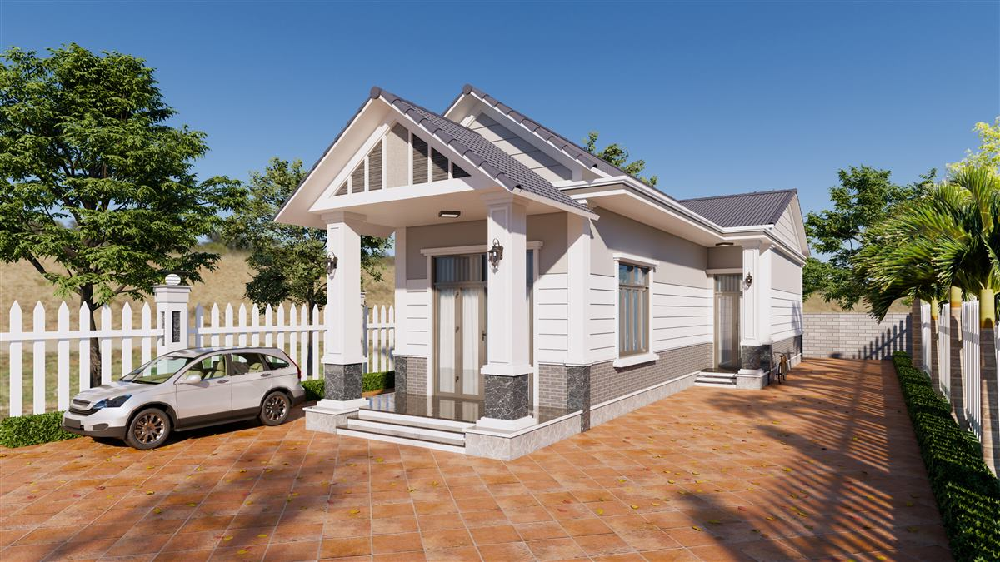
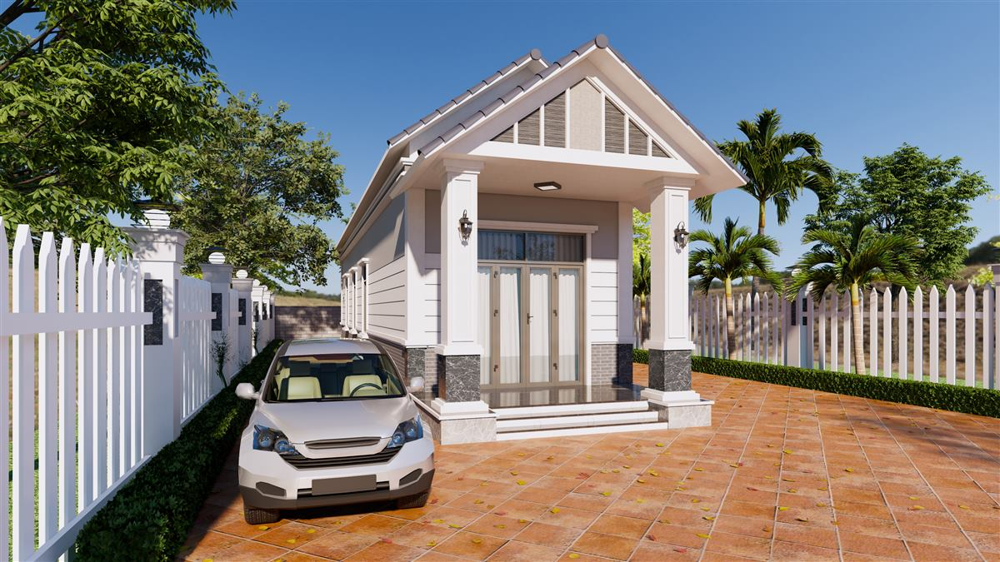

Nhà cấp 4 sảnh đầu hồi sân gạch đỏ và hàng rào trắng
Nhà một tầng trên khu đất rộng thường có lợi thế về sân và cây xanh. Mẫu nhà cấp 4 sảnh đầu hồi sân gạch đỏ này của Đại Phát Decor kết hợp sảnh có mái nhọn với khoảng sân màu cam đất và hàng rào trắng. Hai phối cảnh 3D thể hiện công trình từ phía trước và từ bên hông, đủ để anh chị hình dung được dáng nhà và sân.

Tổng quan công trình
Ngôi nhà trải dài theo khu đất, có sảnh mái dốc nhô ra phía trước. Đầu hồi màu trắng, có các nan trang trí tông xám. Bốn cột vuông màu trắng đỡ sảnh, chân cột ốp đá sẫm. Thân nhà có tường ốp thanh ngang màu trắng phía trên, phần chân màu xám. Ở cuối nhà có thêm một đầu hồi nhỏ và lối ra vào phụ.

Nhà cấp 4 sảnh đầu hồi sân gạch đỏ có gì dễ chịu
Dễ chịu nhất là sự rõ ràng của lối vào. Bậc cấp thấp, sảnh rộng, cửa kính lớn nằm ở giữa, đèn tường đặt trên hai cột trước. Sân gạch trải rộng ngay trước sảnh, đủ chỗ cho xe đỗ sát nhà. Khoảng trống này cũng tiện cho những dịp gia đình tụ họp đông người. Từ sảnh có thể nhìn dọc thân nhà về phía sau.
Sân và hàng rào
Sân lát gạch màu cam đất, hàng cây thấp chạy sát chân hàng rào, tạo một đường viền xanh. Hàng rào gồm các thanh trắng đầu nhọn và trụ trắng lớn có phần đá ở giữa. Vẻ ngoài này gợi kiểu hàng rào vườn, thân thiện hơn những tường rào đặc cao. Phía xa có tường xám thấp và các cây lớn, tạo nền cho khu đất.
Vật liệu và màu sắc
Trắng, xám và cam đất là ba màu chính. Mái ngói xám sẫm giúp cân bằng lại mảng sân ấm. Thanh ngang trên tường tạo các đường bóng nhẹ, làm mặt nhà đỡ đơn điệu. Khi làm thực tế, các thanh này có thể là tấm ốp hoặc gờ trát, tùy ngân sách. Sân gạch màu đậm sẽ che bẩn tốt, nhưng dễ nóng vào giữa trưa.
Công năng cần làm rõ
Hai ảnh ngoại thất chưa đủ để biết số phòng và cách chia không gian. Với nhà một tầng dài như thế này, các phòng giữa dễ thiếu sáng, nên khi làm mặt bằng cần tính thêm sân trong hoặc cửa lấy sáng. Việc này nên được trao đổi trước khi chốt hình khối mái vì có liên quan trực tiếp đến kết cấu.
Lưu ý khi xây mẫu nhà này
Trước khi quyết định, anh chị nên để ý:
- Sân gạch rộng cần độ dốc thoát nước rõ ràng, tránh nước đọng về phía bậc cấp sảnh.
- Hàng rào thanh trắng cần sơn ngoài trời tốt và được bảo dưỡng định kỳ để giữ màu.
- Mái dốc dài cần tính kết cấu và cách nhiệt để không gian bên dưới bớt nóng.
- Để chuẩn bị ngân sách thiết kế, anh chị xem cách tính chi phí thiết kế.
Hỏi đáp ngắn
Hàng rào trắng có an toàn không?
Loại hàng rào có khe hở nhiều nên ít riêng tư hơn tường đặc. Nếu cần an ninh cao hơn, có thể thêm cây xanh hoặc tăng chiều cao.
Có đổi sân gạch sang sân đá xám được không?
Được. Sân đá xám sẽ trông hiện đại và mát hơn, nhưng tổng thể ngôi nhà sẽ bớt đi vẻ ấm cúng kiểu nhà vườn.
Mẫu này có phù hợp đất hẹp không?
Khó, vì mẫu cần chiều ngang đủ để thân nhà và sân trải ra. Với đất hẹp, nên giữ sảnh đầu hồi và làm lại phần mặt bằng.
Mẫu liên quan
- Nhà cấp 4 sảnh vòm trần gỗ đèn chùm
- Thiết kế nhà cấp 4 mái thái có sân trước
- Mẫu nhà 1 tầng cửa vòm 3 phòng ngủ
Xem thêm
- Biệt thự góc đường cổng hoa văn lớn
- Nhà phố trắng cửa vòm ô kính hoa gió
- Tất cả mẫu nhà và dịch vụ thiết kế của Đại Phát Decor
Liên hệ tư vấn
Gửi kích thước đất và mong muốn, Đại Phát Decor sẽ trao đổi phương án và báo giá.